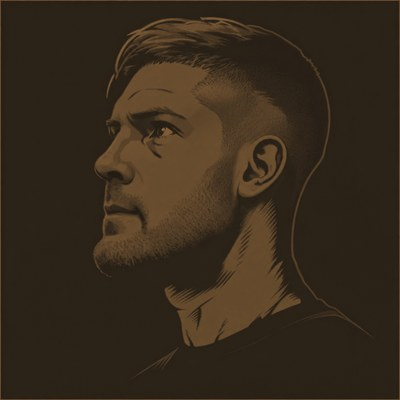

Consulting · Advisory · Psychotherapy
Independent judgment for consequential moments
The Work
Independent judgment for leaders and organizations navigating high-stakes moments.
Career strategy grounded in clinical and executive experience.
Private, long-term clinical work for professionals in demanding environments.
About
The Yaeger Group provides executive consulting, vocational advisory, and clinical psychotherapy. Few practices offer all three. Fewer still integrate them. Each discipline is sharper because it draws on the other two.
A consultant who understands clinical psychology knows why the room is stuck, not just that it is.
An advisor with executive experience doesn't just map a next move, but accounts for what it will actually demand.
A therapist who has sat in boardrooms doesn't treat stress in the abstract, but in the specific context that created it.
This work is more precise because it draws on more than one lens. Problems get named faster, decisions get made with more context, and support does not stop where one discipline's vocabulary ends. This is what the Yaeger Group makes possible. And the possibilities have been profound.
Edward J. Yaeger Jr.

Over twenty-five years of experience across business, consulting, academia, and clinical practice.
I am a first-generation college graduate from a working class family in the City of Philadelphia. Over twenty-five years, I have worked across business, consulting, academia, and clinical practice, advising leaders, public figures, and professionals whose decisions carry real consequence. My clinical licensure came later in life, after three prior degrees and years of advisory work, because the need for it became essential.
Long ago, I was a competitive athlete: a nationally-ranked sprint triathlete, competitive water polo player, and All-American swimmer, having trained under Philadelphia Department of Recreation Swimming Hall-of-Famer, Coach Jim Ellis, on whom the feature-length film, Pride, is based. This was right around the time I was bopping about errant modeling gigs for popular magazines like GQ and consumer fashion brands like J.Crew.
I have frequently contributed op-ed pieces to major publications, such as HuffPost and The Advocate, lectured at academic centers across North America and Europe, including Johns Hopkins, UBC, and Bocconi, and guest paneled at events hosted by major professional associations and advocacy groups, including ACA, AMA, and HRC.
Education & Training
- M.A., Clinical Mental Health Counseling Northwestern University
- M.P.A., Management Harvard University
- M.B.A., Management & Marketing New York University
- B.A., Latin American Studies Columbia University
Credentials
- LMHC Licensed Mental Health Counselor, NY
- LPC Licensed Professional Counselor
Contact
Begin a conversation
Most people who reach out do so because they sense that continuing as things have been carries a quiet cost, one that compounds over time. If someone I work with suggested you visit, I welcome the conversation.
Initial inquiries are welcome from individuals referred by a current or former client.
Initial outreach must be done by you directly, not by an assistant, chief of staff, or any third party.